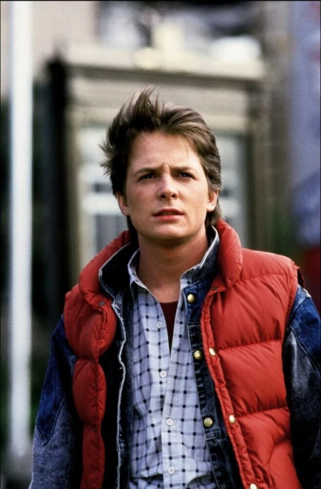

Назад в будущее
5.0

Главные актеры

Майкл Джей Фокс
Кристофер Ллойд
Криспин Гловер
В постапокалиптическом мире, где технологии преобладают, главный герой оказывается отправленным назад во времени, чтобы предотвратить катастрофу, которая разрушила человечество. Встретившись с опасностями и загадками прошлого, он должен использовать свои знания будущего, чтобы спасти мир и изменить ход истории. В этом захватывающем научно-фантастическом фильме раскрывается важность выборов и последствия, которые они могут иметь для будущего человечества.